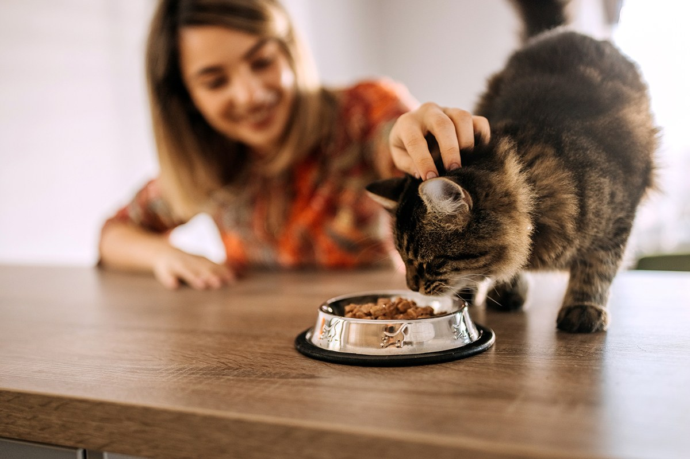

Unlike dogs, cats are obligate carnivores. This means their bodies are designed to process animal protein and they require a specific amino acid called Taurine to keep their hearts and eyes healthy.

Many veterinarians recommend a mix of both. Here is why each one matters:
| Type | Pros | Cons |
|---|---|---|
| Wet (Canned) | High moisture content; prevents kidney issues. | Spoils quickly; more expensive. |
| Dry (Kibble) | Convenient; can stay out all day; helps teeth. | Very low moisture; often high in carbs. |
Never share these items with your cat, no matter how much they beg:
Cats have a low thirst drive. To encourage drinking, try a cat water fountain. Cats prefer running water because, in the wild, still water is often unsafe!